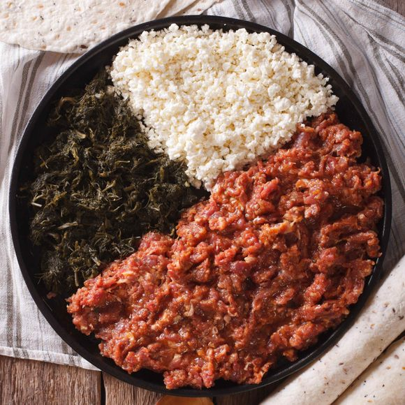

Kitfo Recipe

Description
Kitfo Beef Tartare is a common dish usually found on an
Ethiopian sharing platter. It is raw high-quality beef that’s
finely minced and seasoned with spices and clarified butter.
The taste is savory and salty; perfect umami with a wonderfully
soft melt-in-your-mouth texture. You can serve Kitfo as a true
raw steak tartare, or give it a quick sear in a hot skillet to
partially cook it. Either way you’ll certainly want to enjoy
fresh and meaty beef tartare as a special dish alongside a
bounty of east African-inspired sides!
Ingredients
- Beef Fillet
- Anchovy Paste
- Cayenne Pepper
- Salt
- Garlic Powder
- Ground Cardamom
- Niter Kibbeh (Traditional Clarified Butter)
Steps
-
Set out a large high-powered food processor. Make sure
to trim all the silver skin and fat off the fillet and
cut the fillet into large chunks. Place in the food processor.
-
Add the cayenne, salt, anchovy paste, garlic powder,
and cardamom. Pulse to chop the fillet into fine chunks.
You can choose to stop when the beef resembles quarter inch chunks,
or chop smaller into ground steak.
-
Once the texture is to your liking, melt the clarified
butter and pour over the top. Mix the butter in by hand, do not
pulse.
-
Serve the freshly prepared steak tartare room temperature, or
seal in a container and refrigerate for 30 minutes (or more)
to enjoy cold. If you are enjoying with other hot dishes, I
recommend you serve without refrigerating for the perfect
mouth-feel combination.